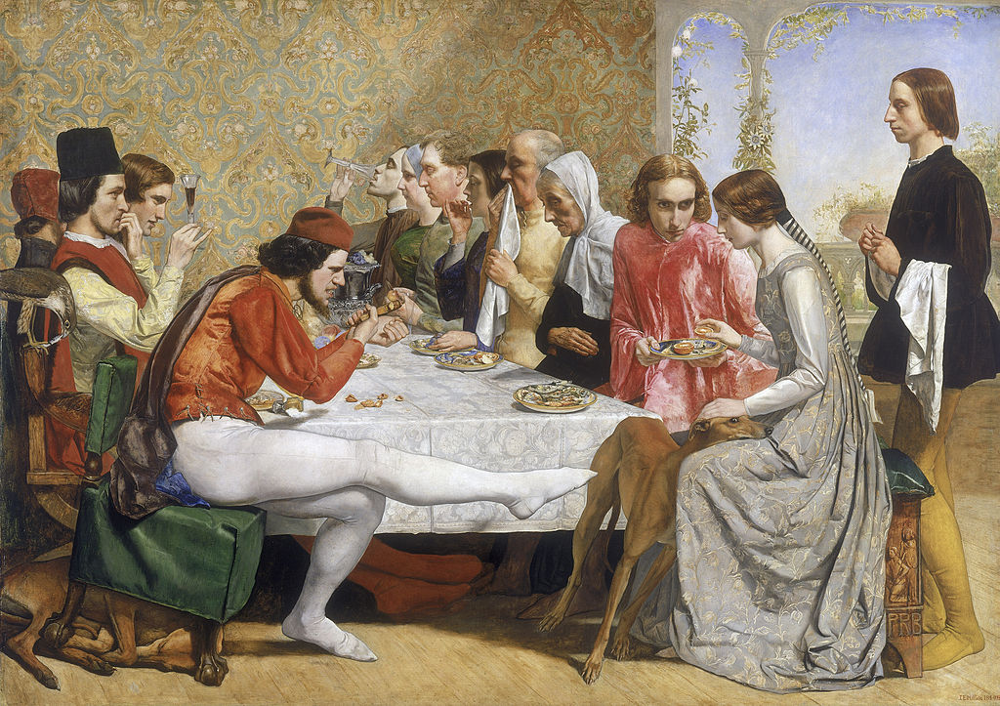

<head>
<meta charset="UTF-8" />
<meta name="keywords" content="drawing, painting" />
<meta name="description" content="drawings by Sunjy" />
<title>Sunjy</title>
<link rel="shortcut icon" type="image/x-icon" href="../../mImages/mCommon/favicon.ico" media="screen" />
<link rel="stylesheet" type="text/css" href="../../mCsses/mCommon/mCssA.css" />
<link rel="stylesheet" type="text/css" href="../../mCsses/mCommon/mCssB.css" />
<link rel="stylesheet" type="text/css" href="../../mCsses/mCommon/mCssC.css" />
<link rel="stylesheet" type="text/css" href="../../mCsses/mCommon/mCssD.css" />
<link rel="stylesheet" type="text/css" href="../../mCsses/mContent/mCssA.css" />
<link rel="stylesheet" type="text/css" href="../../mCsses/mContent/mCssB.css" />
<link rel="stylesheet" type="text/css" href="../../mCsses/mContent/mCssC.css" />
<link rel="stylesheet" type="text/css" href="../../mCsses/mContent/mCssD.css" />
</head>
<script type="text/javascript" src="../../mScripts/mContent/mContentAA.js" /></script>
<script type="text/javascript" src="../../mScripts/mContent/mContentAB.js" /></script>
<script type="text/javascript" src="../../mScripts/mContent/mContentAC.js" /></script>
<script type="text/javascript" src="../../mScripts/mContent/mContentAD.js" /></script>
<script type="text/javascript"></script> 
<script type="text/javascript">
document.write('<div class="mImgAbsolute"></div>');
/*
document.write('<p class="mFontSizeBColor" />From a white paper...</p>');
document.write('<table class="center"><tr><td>');
document.write('');
document.write('</td></tr></table>');
*/
</script>


<script type="text/javascript">
document.write('<p class="mFontSizeBColor" />Isabella</p>');
document.write('<p class="mFontSizeSColor" />“Isabella” by John Everett Millais depicts a scene in the relationship between Isabella, the sister of wealthy merchants, and their poor apprentice Lorenzo.<br><br>It shows the moment at which Isabella’s jealous brothers realize that there is a romance between the two young people. The brothers later plot to murder Lorenzo so they can marry Isabella to a wealthy nobleman.<br><br>The painting illustrates an episode from a 1300s story which was reprised by John Keats in poem form.<br><br>In the painting, Isabella is being handed a blood orange on a plate by the doomed Lorenzo, signifying the later spilling of Lorenzo’s blood. <br><br>One of her brothers kicks a frightened dog while cracking a nut and leaning forward in an upturned chair. The painting is structured with a deliberately distorted perspective, elongating the right-hand side of the table.<br><br>This artwork was Millais’s first work in the Pre-Raphaelite style, created shortly after the formation of the Pre-Raphaelite Brotherhood in 1848.<br><br>The base of the bench on which Isabella sits has a carving depicting a kneeling figure under which appear the letters PRB which stand for Pre-Raphaelite Brotherhood. This painting was the first to incorporate the Pre-Raphaelite initials.<br><br>A distinctive Pre-Raphaelite feature is the hidden symbolism in their paintings. Experts claim several hidden phallic symbols in this picture, mainly surrounding the frustrated brother on the front left.<br><br>Critics argue that the critical symbol is the shadow on the table near his crotch area, below his elbow and the related body language.<br></p>');
document.write('<table class="center" /><tr><td>');
document.write('<br>It shows the moment at which Isabella’s jealous brothers realize that there is a romance between the two young people. The brothers later plot to murder Lorenzo so they can marry Isabella to a wealthy nobleman.<br><br>The painting illustrates an episode from a 1300s story which was reprised by John Keats in poem form.<br><br>In the painting, Isabella is being handed a blood orange on a plate by the doomed Lorenzo, signifying the later spilling of Lorenzo’s blood. <br><br>One of her brothers kicks a frightened dog while cracking a nut and leaning forward in an upturned chair. The painting is structured with a deliberately distorted perspective, elongating the right-hand side of the table.<br><br>This artwork was Millais’s first work in the Pre-Raphaelite style, created shortly after the formation of the Pre-Raphaelite Brotherhood in 1848.<br><br>The base of the bench on which Isabella sits has a carving depicting a kneeling figure under which appear the letters PRB which stand for Pre-Raphaelite Brotherhood. This painting was the first to incorporate the Pre-Raphaelite initials.<br><br>A distinctive Pre-Raphaelite feature is the hidden symbolism in their paintings. Experts claim several hidden phallic symbols in this picture, mainly surrounding the frustrated brother on the front left.<br><br>Critics argue that the critical symbol is the shadow on the table near his crotch area, below his elbow and the related body language.<br>" />');
document.write('</td></tr></table>');
</script>


